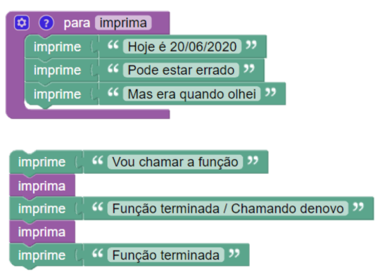

<!DOCTYPE html>
<html lang="en">
  <head>
    <meta charset="utf-8" />
    <meta name="viewport" content="width=device-width, initial-scale=1.0, maximum-scale=1.0, user-scalable=no" />

    <title>PC - Aula 4</title>
    <link rel="stylesheet" href="./dist/reveal.css" />
    <link rel="stylesheet" href="./dist/theme/white.css" id="theme" />
    <link rel="stylesheet" href="./css/highlight/zenburn.css" />
    <link rel="stylesheet" href="./assets/styles/main.css" />

  </head>
  <body>
    <div class="reveal">
      <div class="slides"><section  data-markdown><script type="text/template">
<!-- .slide: class="frontpage" -->
# Pensamento Computacional
## Aula 4 - Repetições e funções
Prof. André Campos<br>
Prof. Júlio de Melo
</script></section><section  data-markdown><script type="text/template">
# Sumário
* Repetições em Python
  * Enquanto...
  * Para...
* Funções
  * Funções básicas
  * Funções com parâmetros
  * Funções com retorno
</script></section><section ><section data-markdown><script type="text/template">
# Repetições
* Repetições nos blocos
  
* Há apenas 2 formas de repetições em Python<!-- .element: class="fragment" -->
  * Enquanto...
  * Para...

</script></section><section data-markdown><script type="text/template">
# Laço enquanto
<!-- .element: class="fright" -->
Similar ao laço do bloco

<div><!-- .element: class="fragment" -->
Sintaxe

```python
while condição:
  comando1
  comando2
  comando3

comando_fora_do_laço
```
</div>

Comandos dentro do laço precisam estar identados (como no `if`)
<!-- .element: class="fragment attention" -->

</script></section><section data-markdown><script type="text/template">
# Exemplo do enquanto

Exemplo
```python [1-5|1|2|3|4|2|3|4|2|3|4|2|5|1-5]
count = 0
while count < 3:
  print(count)
  count = count + 1
print("terminou")
```

count: 0
<!-- .element: id="p1var" class="variables" -->

Saída

?
<!-- .element: id="p1out" class="term" -->

</script></section><section data-markdown><script type="text/template">
# Exemplo 1

<iframe src="https://trinket.io/embed/python/a0e90ae718"
  width="100%" height="500"
  frameborder="0"
  marginwidth="0"
  marginheight="0"
  allowfullscreen>
</iframe>

</script></section><section data-markdown><script type="text/template">
# Exemplo 2

<iframe src="https://trinket.io/embed/python/f52b08f555"
  width="100%" height="500"
  frameborder="0"
  marginwidth="0"
  marginheight="0"
  allowfullscreen>
</iframe>

</script></section><section data-markdown><script type="text/template">
# Laço para (`for`)
<!-- .element: class="fright" -->
Pode substituir o bloco `conte`, porém é mais genérico

<div><!-- .element: class="fragment" -->
Sintaxe

```python
for elemento in sequência:
  comando1
  comando2
  comando3

comando_fora_do_laço
```
</div>

</script></section><section data-markdown><script type="text/template">
# Exemplo do `for`

Exemplo
```python [1-3|1|2|1|2|1|2|1|2|1|3|1-3]
for element in [1, 2, 3, 4]:
  print(element)
print("terminou")
```

element: ?
<!-- .element: id="p2var" class="variables" -->

Saída

?
<!-- .element: id="p2out" class="term" -->

</script></section><section data-markdown><script type="text/template">
# Função `range()`
Permite criar uma sequência numérica (inteiros)
```python
range(primeiro, limite, passo)
```

<div><!-- .element: class="fragment" -->
O limite não entra na sequência gerada

```python
range(2, 5, 1) --> [2, 3, 4]
```
</div>

<div><!-- .element: class="fragment" -->
Variações dos parâmetros

```python
range(10)      --> [0, 1, 2, 3, 4, 5, 6, 7, 8, 9]
range(5, 10)   --> [5, 6, 7, 8, 9]
```
</div>

</script></section><section data-markdown><script type="text/template">
# Usando `range()` no `for`

Permite simular o bloco `conte até`

<!-- .element: class="fright" -->
```python
for i in range(0, 11, 1):
  ...
```

Outros exemplos<!-- .element: class="fragment" -->

```python 
for i in range(10):   # imprime os 10 primeiros números pares
  print(2*i)
```
<!-- .element: class="fragment" -->

```python
v = int(input("Valor: "))
for i in range(v, 100, v): # imprime os múltiplos de um valor
  print(i)                 # fornecido pelo usuário até 100
```
<!-- .element: class="fragment" -->


</script></section><section data-markdown><script type="text/template">
# Exemplo 1

<iframe src="https://trinket.io/embed/python/958fecd0a1"
  width="100%" height="500"
  frameborder="0"
  marginwidth="0"
  marginheight="0"
  allowfullscreen>
</iframe>

</script></section><section data-markdown><script type="text/template">
# Exemplo 2

<iframe src="https://trinket.io/embed/python/00d4177e7c"
  width="100%" height="500"
  frameborder="0"
  marginwidth="0"
  marginheight="0"
  allowfullscreen>
</iframe>

</script></section><section data-markdown><script type="text/template">
# Laços aninhados

<iframe src="https://trinket.io/embed/python/1b8667d00f"
  width="100%" height="500"
  frameborder="0"
  marginwidth="0"
  marginheight="0"
  allowfullscreen>
</iframe>

</script></section><section data-markdown><script type="text/template">
# Quebra/continuação de laços
<!-- .element: class="fright" -->
Similares aos blocos

* `break`: para o laço
* `continue`: volta para o início do bloco

```python [1-8|1|2|3|6|1|2|3|4|8|1-8]
while True:
  valor = int(input("Digite um valor de 1 a 5:"))
  if valor >= 1 and valor <= 5:
    break
  else:
    print("Valor inválido!")

print("Muito bem!")
```
<!-- .element: class="fragment" -->

</script></section></section><section ><section data-markdown><script type="text/template">
# Funções
* Funções nos blocos
<!-- .element: class="fright" -->
* Similar em Python <!-- .element: class="fragment" -->
  * Funções básicas
  * Funções com parâmetros
  * Funções com retorno

```python
def imprima():
  print("Hoje é 20/06/2020")
  print("Pode estar errado")
  print("Mas era quando olhei")

```
<!-- .element: class="fragment" -->
</script></section><section data-markdown><script type="text/template">
# Funções básicas
* Serve para...
  * estruturar o código
  * evitar re-escrever o mesmo trecho

```python [1-8|6|1|2-4|7|8|1|2-4|1-8]
def quadrado():
  for i in range(4):
    turtle.forward(100)
    turtle.left(90)

quadrado()
turtle.left(90)
quadrado()
```
</script></section><section data-markdown><script type="text/template">
# Variáveis locais e globais
Variáveis definidas dentro de uma função *são visíveis* apenas na função (**variável local**)

Variáveis definidas fora de uma função *podem ser visíveis* em qualquer função (**variável global**)

```python
def func():
  a = 0
  b = 1

b = 0
func()
print(a + b) # ERRO! Não sabe quem é 'a'
```
</script></section><section data-markdown><script type="text/template">
# Variáveis globais
Na medida do possível, evitem tratar variáveis globais dentro de funções

É uma boa prática **isolar** os dados na função, porém...

```python
def func():
  global b
  b = 1

b = 0
func()
print(b)
```
Parâmetros nas funções servem<br>para isolar os dados <!-- .element: class="fragment" -->
</script></section><section data-markdown><script type="text/template">
# Funções com parâmetro
* Parâmetros servem para...
  * Alterar o comportamento da rotina (*parametrizável*)
  * Isolar os dados (não precisa acessar variáveis globais)

```python
def quadrado(tamanho):
  for i in range(4):
    turtle.forward(tamanho)
    turtle.left(90)

quadrado(50)
turtle.left(90)
quadrado(100)
```
Parâmetros são variáveis locais<br>inicializadas com valores passados<!-- .element: class="fragment attention" -->

</script></section><section data-markdown><script type="text/template">
# Exemplo

<iframe src="https://trinket.io/embed/python/630e835028"
  width="100%" height="500"
  frameborder="0"
  marginwidth="0"
  marginheight="0"
  allowfullscreen>
</iframe>

</script></section><section data-markdown><script type="text/template">
# Funções com retorno
Funções podem retornar valores, como abaixo
```python
raiz = math.sqrt(16)
```

<div><!-- .element: class="fragment" -->
O valor de retorno é substituído na chamada da função

```python [1|2]
raiz = math.sqrt(16)
raiz = 4
```
</div>

</script></section><section data-markdown><script type="text/template">
# Funções com retorno
Toda função em Python retorna algo.

```python
def hello():
  print("Olá")

retorno = hello()
print(retorno)
```

Olá<br>
None
<!-- .element: class="term" -->


`None` é um tipo especial para representar "Nenhum valor"
<!-- .element: class="fragment" -->

</script></section><section data-markdown><script type="text/template">
# Return
Para retornarmos algum valor, usamos `return`

```python
import math

def areaCirc(raio):
  return math.pi * raio**2

area = areaCirc(10)
```

```python
def volumeCone(raio, altura):
  areaBase = areaCirc(raio)
  return areaBase * altura / 3

volume = volumeCone(10, 15)
```
<!-- .element: class="fragment" -->
</script></section><section data-markdown><script type="text/template">
# Posição do return
`return` pode estar em qualquer trecho da função 

```python
def somaValoresDoUsuario(raio):
  soma = 0
  while True:
    valor = int(input('Digite um valor ou 0 p/ terminar:'))
    if valor == 0:
      return soma
    soma = soma + valor

area = somaValoresDoUsuario()
```

Quando o `return` é alcançado a função termina imediatamente
<!-- .element: class="fragment" -->

</script></section><section data-markdown><script type="text/template">
# Exemplo

<iframe src="https://trinket.io/embed/python/565c8533a4"
  width="100%" height="500"
  frameborder="0"
  marginwidth="0"
  marginheight="0"
  allowfullscreen>
</iframe>
</script></section></section><section  data-markdown><script type="text/template">
# Dúvidas
</script></section></div>
    </div>

    <script src="./dist/reveal.js"></script>

    <script src="./plugin/markdown/markdown.js"></script>
    <script src="./plugin/highlight/highlight.js"></script>
    <script src="./plugin/zoom/zoom.js"></script>
    <script src="./plugin/notes/notes.js"></script>
    <script src="./plugin/math/math.js"></script>
    <script>
      function extend() {
        var target = {};
        for (var i = 0; i < arguments.length; i++) {
          var source = arguments[i];
          for (var key in source) {
            if (source.hasOwnProperty(key)) {
              target[key] = source[key];
            }
          }
        }
        return target;
      }

      // default options to init reveal.js
      var defaultOptions = {
        controls: true,
        progress: true,
        history: true,
        center: true,
        transition: 'default', // none/fade/slide/convex/concave/zoom
        plugins: [
          RevealMarkdown,
          RevealHighlight,
          RevealZoom,
          RevealNotes,
          RevealMath
        ]
      };

      // options from URL query string
      var queryOptions = Reveal().getQueryHash() || {};

      var options = extend(defaultOptions, {"transition":"fade","center":false}, queryOptions);
    </script>

    <script src="./assets/scripts/aula4.js"></script>

    <script>
      Reveal.initialize(options);
    </script>
  </body>
</html>
